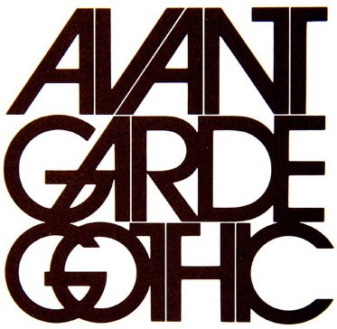

¡Respuesta Correcta!
Herbert Lubalin fue un verdadero maestro de la tipografía

Diseñador editorial de "Avant Garde"
revista de diseño gráfico publicada hacia fines los años 60 en Nueva York
Si querés ver alguna edición hace
¡click acá!
Siguiente nivel